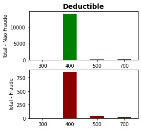

Detecção de fraude em seguro de veículo
Sobre
Objetivo
Detectar e evitar processos fraudulentos é um enorme desafio. Para tal, o uso de técnicas de machine learning tem se mostrado bastante promissor. Porém, um bom desempenho de um modelo de machine learning depende de uma etapa que não é simples: entender e tratar os diversos dados de diferentes naturezas que estão em posse das seguradoras.
E este é o foco principal do projeto: entender cada variável disponibilizada na base de dados e tratá-las adequadamente. Dessa forma, é possível utilizá-las no desenvolvimento de algoritmos de classificação. O que também será realizado, escolhendo alguns métodos existentes e avaliando diferentes configurações destes.
Base de dados
A base de dados escolhida contém diversas informações sobre pedidos de indenização de uma seguradora de veículos. As informações se referem à pessoa envolvida em um acidente, à apólice contratada, ao titular da apólice, ao veículo envolvido, etc. Originalmente são 15420 registros, onde o atributo 'FraudFound_P' indica se uma determinada solicitação foi ou não identificada como fraudulenta.
Disponível em: https://www.kaggle.com/datasets/shivamb/vehicle-claim-fraud-detection
PARTE 1: Importar bibliotecas
import numpy as np # realizar cálculos em arrays multidimensionais
import pandas as pd # manipulação e análise de dados
import seaborn as sns # visualização de gráficos estatísticos
import scipy.stats as stats #
import matplotlib.pyplot as plt # criação de gráficos e visualizações de dados em geral
from imblearn.over_sampling import ADASYN # método de balanceamento ADASYN
from sklearn.model_selection import train_test_split # dividir a base de dados em treino e teste
from sklearn.ensemble import RandomForestClassifier # método de classificação Random Forest
from sklearn.model_selection import RepeatedStratifiedKFold # método de validação cruzada
from sklearn.model_selection import GridSearchCV # testar diferentes valores de parâmetros para um método
from sklearn.inspection import permutation_importance # visualizar relavância dos atributos em um método
from sklearn import metrics # importar métricas de avaliação
# a saída dos comandos de plotagem é exibida diretamente abaixo da célula
%matplotlib inline
PARTE 2: Importar base de dados
url_dataset = "https://github.com/peuvitor/insurance-fraud-detection/blob/main/dataset/fraud_oracle.csv?raw=true"
df_dataset = pd.read_csv(url_dataset)
PARTE 3: Entendimento da base de dados
3.1. Investigar as colunas existentes
Quantas e quais são as colunas? Quais são os seus respectivos tipos?
<class 'pandas.core.frame.DataFrame'>
RangeIndex: 15420 entries, 0 to 15419
Data columns (total 33 columns):
# Column Non-Null Count Dtype
--- ------ -------------- -----
0 Month 15420 non-null object
1 WeekOfMonth 15420 non-null int64
2 DayOfWeek 15420 non-null object
3 Make 15420 non-null object
4 AccidentArea 15420 non-null object
5 DayOfWeekClaimed 15420 non-null object
6 MonthClaimed 15420 non-null object
7 WeekOfMonthClaimed 15420 non-null int64
8 Sex 15420 non-null object
9 MaritalStatus 15420 non-null object
10 Age 15420 non-null int64
11 Fault 15420 non-null object
12 PolicyType 15420 non-null object
13 VehicleCategory 15420 non-null object
14 VehiclePrice 15420 non-null object
15 FraudFound_P 15420 non-null int64
16 PolicyNumber 15420 non-null int64
17 RepNumber 15420 non-null int64
18 Deductible 15420 non-null int64
19 DriverRating 15420 non-null int64
20 Days_Policy_Accident 15420 non-null object
21 Days_Policy_Claim 15420 non-null object
22 PastNumberOfClaims 15420 non-null object
23 AgeOfVehicle 15420 non-null object
24 AgeOfPolicyHolder 15420 non-null object
25 PoliceReportFiled 15420 non-null object
26 WitnessPresent 15420 non-null object
27 AgentType 15420 non-null object
28 NumberOfSuppliments 15420 non-null object
29 AddressChange_Claim 15420 non-null object
30 NumberOfCars 15420 non-null object
31 Year 15420 non-null int64
32 BasePolicy 15420 non-null object
dtypes: int64(9), object(24)
memory usage: 3.9+ MB
3.2. Valores únicos de cada coluna
Verificar quais os possíveis valores encontrados na base de dados para cada atributo. Além disso, essa parte será útil para identificar possíveis valores faltantes ou incomuns.
for coluna in df_dataset.columns:
valores_unicos = df_dataset[coluna].unique()
print(f"--> '{coluna}' possui {len(valores_unicos)} valores únicos, são eles:\n {valores_unicos}")
--> 'Month' possui 12 valores únicos, são eles:
['Dec' 'Jan' 'Oct' 'Jun' 'Feb' 'Nov' 'Apr' 'Mar' 'Aug' 'Jul' 'May' 'Sep']
--> 'WeekOfMonth' possui 5 valores únicos, são eles:
[5 3 2 4 1]
--> 'DayOfWeek' possui 7 valores únicos, são eles:
['Wednesday' 'Friday' 'Saturday' 'Monday' 'Tuesday' 'Sunday' 'Thursday']
--> 'Make' possui 19 valores únicos, são eles:
['Honda' 'Toyota' 'Ford' 'Mazda' 'Chevrolet' 'Pontiac' 'Accura' 'Dodge'
'Mercury' 'Jaguar' 'Nisson' 'VW' 'Saab' 'Saturn' 'Porche' 'BMW' 'Mecedes'
'Ferrari' 'Lexus']
--> 'AccidentArea' possui 2 valores únicos, são eles:
['Urban' 'Rural']
--> 'DayOfWeekClaimed' possui 8 valores únicos, são eles:
['Tuesday' 'Monday' 'Thursday' 'Friday' 'Wednesday' 'Saturday' 'Sunday'
'0']
--> 'MonthClaimed' possui 13 valores únicos, são eles:
['Jan' 'Nov' 'Jul' 'Feb' 'Mar' 'Dec' 'Apr' 'Aug' 'May' 'Jun' 'Sep' 'Oct'
'0']
--> 'WeekOfMonthClaimed' possui 5 valores únicos, são eles:
[1 4 2 3 5]
--> 'Sex' possui 2 valores únicos, são eles:
['Female' 'Male']
--> 'MaritalStatus' possui 4 valores únicos, são eles:
['Single' 'Married' 'Widow' 'Divorced']
--> 'Age' possui 66 valores únicos, são eles:
[21 34 47 65 27 20 36 0 30 42 71 52 28 61 38 41 32 40 63 31 45 60 39 55
35 44 72 29 37 59 49 50 26 48 64 33 74 23 25 56 16 68 18 51 22 53 46 43
57 54 69 67 19 78 77 75 80 58 73 24 76 62 79 70 17 66]
--> 'Fault' possui 2 valores únicos, são eles:
['Policy Holder' 'Third Party']
--> 'PolicyType' possui 9 valores únicos, são eles:
['Sport - Liability' 'Sport - Collision' 'Sedan - Liability'
'Utility - All Perils' 'Sedan - All Perils' 'Sedan - Collision'
'Utility - Collision' 'Utility - Liability' 'Sport - All Perils']
--> 'VehicleCategory' possui 3 valores únicos, são eles:
['Sport' 'Utility' 'Sedan']
--> 'VehiclePrice' possui 6 valores únicos, são eles:
['more than 69000' '20000 to 29000' '30000 to 39000' 'less than 20000'
'40000 to 59000' '60000 to 69000']
--> 'FraudFound_P' possui 2 valores únicos, são eles:
[0 1]
--> 'PolicyNumber' possui 15420 valores únicos, são eles:
[ 1 2 3 ... 15418 15419 15420]
--> 'RepNumber' possui 16 valores únicos, são eles:
[12 15 7 4 3 14 1 13 11 16 6 2 8 5 9 10]
--> 'Deductible' possui 4 valores únicos, são eles:
[300 400 500 700]
--> 'DriverRating' possui 4 valores únicos, são eles:
[1 4 3 2]
--> 'Days_Policy_Accident' possui 5 valores únicos, são eles:
['more than 30' '15 to 30' 'none' '1 to 7' '8 to 15']
--> 'Days_Policy_Claim' possui 4 valores únicos, são eles:
['more than 30' '15 to 30' '8 to 15' 'none']
--> 'PastNumberOfClaims' possui 4 valores únicos, são eles:
['none' '1' '2 to 4' 'more than 4']
--> 'AgeOfVehicle' possui 8 valores únicos, são eles:
['3 years' '6 years' '7 years' 'more than 7' '5 years' 'new' '4 years'
'2 years']
--> 'AgeOfPolicyHolder' possui 9 valores únicos, são eles:
['26 to 30' '31 to 35' '41 to 50' '51 to 65' '21 to 25' '36 to 40'
'16 to 17' 'over 65' '18 to 20']
--> 'PoliceReportFiled' possui 2 valores únicos, são eles:
['No' 'Yes']
--> 'WitnessPresent' possui 2 valores únicos, são eles:
['No' 'Yes']
--> 'AgentType' possui 2 valores únicos, são eles:
['External' 'Internal']
--> 'NumberOfSuppliments' possui 4 valores únicos, são eles:
['none' 'more than 5' '3 to 5' '1 to 2']
--> 'AddressChange_Claim' possui 5 valores únicos, são eles:
['1 year' 'no change' '4 to 8 years' '2 to 3 years' 'under 6 months']
--> 'NumberOfCars' possui 5 valores únicos, são eles:
['3 to 4' '1 vehicle' '2 vehicles' '5 to 8' 'more than 8']
--> 'Year' possui 3 valores únicos, são eles:
[1994 1995 1996]
--> 'BasePolicy' possui 3 valores únicos, são eles:
['Liability' 'Collision' 'All Perils']
3.3. Resumo sobre as colunas
Breve entendimento de cada atributo. Levando em conta o contexto do problema, em geral o nome da coluna é autoexplicativo, porém, em alguns momentos pode dar margem à mais de uma interpretação. Aqui explicarei o que é cada atributo, como trabalharei com ele e problemas que precisam ser investigados.
-
Month (object):
- considerarei como o mês em que o acidente ocorreu
- mês abreviado (3 primeiras letras, em inglês)
- contém os 12 possíveis meses, não há valores faltantes nem incompatíveis
-
WeekOfMonth (int64):
- considerarei como a semana do mês em que o acidente ocorreu
- contém valores inteiros de 1 a 5
-
DayOfWeek (object):
- considerarei como o dia da semana em que o acidente ocorreu
- nome do dia da semana completo, em inglês
- contém os 7 possíveis dias da semana, não há valores faltantes nem incompatíveis
-
Make (object):
- considerarei como a marca do veículo envolvido no acidente
- contém uma lista com 19 fabricantes
-
AccidentArea (object):
- informa se o acidente ocorreu em uma área rural ou urbana
-
DayOfWeekClaimed (object):
- dia da semana referente ao pedido de seguro
- nome do dia da semana completo, em inglês
- contém 8 valores únicos (7 possíveis dias da semana + '0'), a seguir serão investigados mais a fundo
-
MonthClaimed (object):
- mês referente ao pedido de seguro
- mês abreviado (3 primeiras letras, em inglês)
- contém 13 valores únicos (12 possíves meses + '0'), a seguir serão investigados mais a fundo
-
WeekOfMonthClaimed (int64):
- semana do mês referente ao pedido de seguro
- contém valores inteiros de 1 a 5
-
Sex (object):
- é o sexo biológico da pessoa envolvida no acidente ou da pessoa solicitando o seguro? (considerarei a primeira opção)
- pode ser: sexo masculino ou feminino
-
MaritalStatus (object):
- é o estado civil da pessoa envolvida no acidente ou da pessoa solicitando o seguro? (considerarei a primeira opção)
- pode ser: solteiro, casado, divorciado ou viúvo
-
Age (int64):
- é a idade da pessoa envolvida no acidente ou da pessoa solicitando o seguro? (considerarei a primeira opção)
- valores inteiros de 16 a 80 (a seguir, o valor '0' será investigado mais a fundo)
-
Fault (object):
- indica quem foi considerado como o responsável pelo acidente
- pode ser: titular do seguro ou terceiro
-
PolicyType (object):
- indica o tipo da apólice contratada
- contém uma lista com 9 tipos, onde cada um é composto por 'categoria do veículo' + 'tipo do seguro'
- categoria do veículo: sport, sedan, utility
- tipo de seguro: liability, all perils, collision
- já existe um atributo para indicar a categoria do veículo (VehicleCategory) e outra para indicar o tipo de seguro (BasePolicy), a seguir verificarei como tratar essas informações duplicadas
-
VehicleCategory (object):
- indica a categoria do veículo registrado na apólice/envolvido no acidente
- pode ser: sport, sedan, utility
-
VehiclePrice (object):
- indica o preço do veículo envolvido no acidente
- contém 6 faixas de valores (provavelmente em dólares)
- duas abordagens serão avaliadas: considerar como um dado categórico ou substituir os intervalos pelo valor médio
-
FraudFound_P (int64):
- indica se aquela solicitação foi ou não uma fraude
- é o atributo alvo
-
PolicyNumber (int64):
- identifica cada pedido de seguro
- contém 15420 valores inteiros únicos, de 1 a 15420
- a seguir será verificada a relação entre o número da linha e o PolicyNumber, possivelmente são a mesma coisa
-
RepNumber (int64):
- indica o número do representante
- contém valores inteiros de 1 a 16
- não fica claro a relevância do parâmetro para o problema, a seguir isso será investigado
-
Deductible (int64):
- indica o valor da franquia do seguro
- 4 opções de valores inteiros: 300, 400, 500 e 700
-
DriverRating (int64):
- alguma métrica de avaliação do motorista
- contém valores inteiros de 1 a 4
- não fica claro se esses dados se traduzem em categorias ou se estão dentro de um certo intervalo de avaliação
-
Days_Policy_Accident (object):
- será considerado como o número de dias que se passaram entre a compra da apólice e o acidente
- contém 5 faixas de valores
- duas abordagens serão avaliadas: considerar como um dado categórico ou substituir os intervalos pelo valor médio
-
Days_Policy_Claim (object):
- será considerado como o número de dias que se passaram entre a compra da apólice e o pedido de indenização
- contém 4 faixas de valores
- duas abordagens serão avaliadas: considerar como um dado categórico ou substituir os intervalos pelo valor médio
-
PastNumberOfClaims (object):
- indica quantas vezes a mesma pessoa realizou pedidos de indenização
- contém 4 faixas de valores
-
AgeOfVehicle (object):
- indica a idade do veículo (considerarei referenre ao momento do acidente)
- contém 8 faixas de valores
- duas abordagens serão avaliadas: considerar como um dado categórico ou substituir os intervalos pelo valor médio
-
AgeOfPolicyHolder (object):
- indica a idade do titular da apólice
- contém 9 faixas de valores
- duas abordagens serão avaliadas: considerar como um dado categórico ou substituir os intervalos pelo valor médio
-
PoliceReportFiled (object):
- indica se foi feito um boletim de ocorrência para o acidente
- pode ser: sim ou não
-
WitnessPresent (object):
- indica se uma testemunha estava presente no momento do acidente
- pode ser: sim ou não
-
AgentType (object):
- classifica um agente (relacionado ao acidente ou ao pedido) como externo ou interno
- não fica claro a relevância do parâmetro para o problema, a seguir isso será investigado
-
NumberOfSuppliments (object):
- indica algum tipo de suplemento no seguro
- contém 4 faixas de valores
- duas abordagens serão avaliadas: considerar como um dado categórico ou substituir os intervalos pelo valor médio
- não fica claro a relevância do parâmetro para o problema, a seguir isso será investigado
-
AddressChange_Claim (object):
- indica quantos anos se passaram entre a última vez que foi registrado uma mudança de endereço e o pedido de indenização
- contém 5 faixas de valores
- duas abordagens serão avaliadas: considerar como um dado categórico ou substituir os intervalos pelo valor médio
-
NumberOfCars (object):
- considerarei como o número de carros cobertos pela apólice (outra possibilidade seria o número de carros envolvidos no acidente)
- contém 5 faixas de valores
- duas abordagens serão avaliadas: considerar como um dado categórico ou substituir os intervalos pelo valor médio
-
Year (int64):
- considerarei como o ano em que o acidente ocorreu
- pode ser: 1994, 1995 e 1996
-
BasePolicy (object):
- indica o tipo de seguro contratado
- pode ser: liability, all perils, collision
PARTE 4: Tratamento dos dados
4.1. Verificar relação entre os índices das linhas do dataset e 'PolicyNumber'
PolicyNumber é igual ao índice da linha+1?
<bound method NDFrame.describe of 0 1
1 2
2 3
3 4
4 5
...
15415 15416
15416 15417
15417 15418
15418 15419
15419 15420
Name: PolicyNumber, Length: 15420, dtype: int64>
df_dataset_total_linhas = len(df_dataset_1)
PolicyNumber_e_indice = sum(1 if df_dataset_1['PolicyNumber'].iloc[indice] == indice+1 else 0 \
for indice in range(df_dataset_total_linhas))
print(f"Número de linhas do dataset: {df_dataset_total_linhas}")
print(f"Quantidade de linhas onde PolicyNumber = indice+1: {PolicyNumber_e_indice}")
Número de linhas do dataset: 15420
Quantidade de linhas onde PolicyNumber = indice+1: 15420
Como a suposição foi provada verdadeira, esta coluna será ignorada, pois não apresenta utilidade para o problema em questão.
4.2. Tratar o valor 0 encontrado em 'DayOfWeekClaimed', 'MonthClaimed' e 'Age'
##### 'DayOfWeekClaimed' e 'MonthClaimed'
DayOfWeekClaimed_zeros = df_dataset_1.index[df_dataset_1['DayOfWeekClaimed'] == '0'].tolist()
MonthClaimed_zeros = df_dataset_1.index[df_dataset_1['MonthClaimed'] == '0'].tolist()
print("DayOfWeekClaimed e MonthClaimed possuem o valor '0' na(s) mesma(s) linha(s):", DayOfWeekClaimed_zeros == MonthClaimed_zeros)
print("Índice(s):", DayOfWeekClaimed_zeros)
# como trata-se apenas de uma única ocorrência, a linha correspondente será eliminada
df_dataset_1 = df_dataset_1.drop(DayOfWeekClaimed_zeros)
df_dataset_1.reset_index(drop=True, inplace=True)
DayOfWeekClaimed e MonthClaimed possuem o valor '0' na(s) mesma(s) linha(s): True
Índice(s): [1516]
##### 'Age'
Age_zeros = df_dataset_1.index[df_dataset_1['Age'] == 0].tolist()
print(f"Age possui o valor '0' em {len(Age_zeros)} linhas. \n")
# partirei do seguinte questionamento: nessas ocasiões, existe alguma relação com outra coluna que pode ser útil?
for coluna in df_dataset_1.columns:
linhas_age0 = df_dataset_1.loc[df_dataset_1['Age']==0, coluna].unique()
if len(linhas_age0) < 2 and coluna != 'Age':
print(f"--> Correspondência para '{coluna}': {linhas_age0}")
Age possui o valor '0' em 319 linhas.
--> Correspondência para 'Sex': ['Male']
--> Correspondência para 'MaritalStatus': ['Single']
--> Correspondência para 'Days_Policy_Accident': ['more than 30']
--> Correspondência para 'Days_Policy_Claim': ['more than 30']
--> Correspondência para 'AgeOfPolicyHolder': ['16 to 17']
16 to 17 319
18 to 20 15
21 to 25 108
26 to 30 613
31 to 35 5593
36 to 40 4043
41 to 50 2828
51 to 65 1392
over 65 508
Name: AgeOfPolicyHolder, dtype: int64
Verificando as colunas que possuem sempre a mesma correspondência, à primeira vista, aquela que pode dar uma solução para Age==0 é 'AgeOfPolicyHolder'.
E, de fato, considerando todo o dataset, temos uma frequência de 319 para '16 to 17' em AgeOfPolicyHolder. Exatamente a mesma quantidade de linhas com Age==0.
Investigarei o seguinte: 'Age' sempre está dentro do intervalo de 'AgeOfPolicyHolder'?
# extrair os limites dos intervalos em 'AgeOfPolicyHolder'
get_intervalo_AgeOfPolicyHolder = lambda linha: [int(linha[:2]), int(linha[-2:])] if 'to' in linha else [int(linha[-2:]), 200]
df_dataset_total_linhas = len(df_dataset_1)
total = 0
for indice in range(df_dataset_total_linhas):
idade = df_dataset_1['Age'].iloc[indice]
intervalo_idade = get_intervalo_AgeOfPolicyHolder(df_dataset_1['AgeOfPolicyHolder'].iloc[indice])
if ~(idade >= intervalo_idade[0] and idade <= intervalo_idade[1]): total += 1
print(f"Em {total} linhas 'Age' não corresponde a 'AgeOfPolicyHolder'. O que representa {total/df_dataset_total_linhas:.2%} do total de linhas.")
Em 7241 linhas 'Age' não corresponde a 'AgeOfPolicyHolder'. O que representa 46.96% do total de linhas.
A resposta para o questionamento é 'não'. Ou seja, o indivíduo envolvido no acidente não necessariamente é a pessoa titular da apólice do seguro.
Apesar disso, para não excluir essa quantidade de linhas do dataset, a opção escolhida para dar seguimento ao projeto é a de substituir o valor de 0 de 'Age' pela média do intervalo de 'AgeOfPolicyHolder'.
df_dataset_1.loc[df_dataset_1['Age']==0, 'Age'] = 16.5
Age_zeros = df_dataset_1.index[df_dataset_1['Age'] == 0].tolist()
print(f"Age possui o valor '0' em {len(Age_zeros)} linhas. \n")
Age_mean = df_dataset_1.index[df_dataset_1['Age'] == 16.5].tolist()
print(f"Age possui o valor '16.5' em {len(Age_mean)} linhas. \n")
Age possui o valor '0' em 0 linhas.
Age possui o valor '16.5' em 319 linhas.
4.3. Verificar relação entre 'PolicyType', 'VehicleCategory' e 'BasePolicy'
PolicyType = "VehicleCategory - BasePolicy"?
<bound method NDFrame.describe of PolicyType VehicleCategory BasePolicy
0 Sport - Liability Sport Liability
1 Sport - Collision Sport Collision
2 Sport - Collision Sport Collision
3 Sedan - Liability Sport Liability
4 Sport - Collision Sport Collision
... ... ... ...
15414 Sedan - Collision Sedan Collision
15415 Sedan - Liability Sport Liability
15416 Sedan - Collision Sedan Collision
15417 Sedan - All Perils Sedan All Perils
15418 Sedan - Collision Sedan Collision
[15419 rows x 3 columns]>
df_dataset_total_linhas = len(df_dataset_1)
total = 0
for indice in range(df_dataset_total_linhas):
PolicyType = df_dataset_1['PolicyType'].iloc[indice]
VehicleCategory_BasePolicy = f"{df_dataset_1['VehicleCategory'].iloc[indice]} - {df_dataset_1['BasePolicy'].iloc[indice]}"
if PolicyType == VehicleCategory_BasePolicy: total += 1
print(f"'PolicyType' corresponde a 'VehicleCategory - BasePolicy' em {total} linhas. O que representa {total/df_dataset_total_linhas:.2%} do total de linhas.")
'PolicyType' corresponde a 'VehicleCategory - BasePolicy' em 10432 linhas. O que representa 67.66% do total de linhas.
A suposição foi provada falsa, portanto, nada será feito com essas três colunas. Mesmo se a suposição fosse verdadeira, ter as informações tanto separadas quanto combinadas pode ser útil para o modelo a ser construído.
PARTE 5: Investigar relações com a variável alvo
Usar de testes estatísticos e recursos gráficos para verificar as relações entre os atributos e o target ('FraudFound_P').
5.1 Teste de Independência
Considerando os diferentes tipos de atributos (numéricos, binários, categóricos), a abordagem escolhida leva em conta a tabela de contigência para cada par coluna e target. Será realizado o teste de independência chi-quadrado, onde a hipótese nula $H_0$ é que as colunas não têm relação e a hipótese alternativa $H_1$ é que existe relação entre as colunas. O nível de significância (alfa) considerado é de 0,05.
Para os resultados dos testes:
-
Se o valor-p encontrado for maior que alfa, não rejeitamos a hipótese nula. Podemos dizer que o resultado do teste não detecta uma relação significativa entre as variáveis;
-
Se o valor-p encontrado for menor que alfa, podemos dizer que há evidências estatísticas suficientes de que existe alguma relação entre as variáveis.
# exemplo de tabela de contigência
pd.crosstab(df_dataset_1['MaritalStatus'], df_dataset_1['FraudFound_P'])
| FraudFound_P | 0 | 1 |
|---|---|---|
| MaritalStatus | ||
| Divorced | 73 | 3 |
| Married | 9986 | 639 |
| Single | 4405 | 278 |
| Widow | 32 | 3 |
# teste de independêndia chi-quadrado
nivel_significancia = 0.05
teste_independencia = []
for coluna in df_dataset_1.columns:
tabela_contigencia = pd.crosstab(df_dataset_1[coluna], df_dataset_1['FraudFound_P'])
chi2_val, valor_p, _, __ = stats.chi2_contingency(tabela_contigencia)
if valor_p < nivel_significancia:
teste_independencia.append([coluna, chi2_val, valor_p])
print("Há evidências estatísticas suficientes de que existe alguma relação entre FraudFound_P e os seguintes atributos:")
df_teste_independencia = pd.DataFrame(teste_independencia, columns=['Atributo', '\u03C7\u00B2', 'Valor-p'])
df_teste_independencia.sort_values(by='Valor-p', inplace=True)
print(df_teste_independencia)
Há evidências estatísticas suficientes de que existe alguma relação entre FraudFound_P e os seguintes atributos:
Atributo χ² Valor-p
10 FraudFound_P 15401.236138 0.000000e+00
7 PolicyType 437.491381 1.768441e-89
20 BasePolicy 402.947238 3.170436e-88
8 VehicleCategory 290.980893 6.520817e-64
6 Fault 264.984556 1.406180e-59
18 AddressChange_Claim 104.722693 9.704718e-22
11 Deductible 72.406255 1.302831e-15
9 VehiclePrice 67.836116 2.888324e-13
13 PastNumberOfClaims 53.541755 1.405198e-11
1 Make 59.815292 2.191573e-06
3 MonthClaimed 42.200514 1.495245e-05
2 AccidentArea 16.901858 3.936304e-05
15 AgeOfPolicyHolder 33.104861 5.896560e-05
4 Sex 13.495678 2.391135e-04
17 NumberOfSuppliments 18.155527 4.085276e-04
5 Age 109.664968 4.472083e-04
0 Month 29.771469 1.720902e-03
14 AgeOfVehicle 21.995137 2.545322e-03
16 AgentType 7.380469 6.593597e-03
19 Year 9.592587 8.260307e-03
12 Days_Policy_Accident 11.569842 2.085381e-02
5.2 Análise Gráfica
Apenas com os atributos que mostram ter uma potencial relação com a variável alvo, utilizarei de recursos gráficos para visualizar mais detalhes dessas relações.
def grafico_barras(tab_cont, titulo, size):
fig, (ax1,ax2) = plt.subplots(2,1,figsize=size)
tab_cont[0].plot.bar(ax=ax1, color='green', rot=0)
tab_cont[1].plot.bar(ax=ax2, color='darkred', rot=0)
ax1.set_title(titulo, size=14, fontweight="bold")
ax1.set(ylabel='Total - Não Fraude', xlabel='')
ax2.set(ylabel='Total - Fraude', xlabel='')
return ax1, ax2
coluna = 'PolicyType'
tab_cont = pd.crosstab(index=df_dataset_1[coluna], columns=df_dataset_1['FraudFound_P'])
print(tab_cont)
grafico_barras(tab_cont, coluna, (15, 4))
plt.show()
FraudFound_P 0 1
PolicyType
Sedan - All Perils 3675 411
Sedan - Collision 5200 384
Sedan - Liability 4951 36
Sport - All Perils 22 0
Sport - Collision 300 48
Sport - Liability 1 0
Utility - All Perils 299 41
Utility - Collision 27 3
Utility - Liability 21 0
coluna = 'BasePolicy'
tab_cont = pd.crosstab(index=df_dataset_1[coluna], columns=df_dataset_1['FraudFound_P'])
print(tab_cont)
grafico_barras(tab_cont, coluna, (4, 4))
plt.show()
coluna = 'VehicleCategory'
tab_cont = pd.crosstab(index=df_dataset_1[coluna], columns=df_dataset_1['FraudFound_P'])
print(tab_cont)
grafico_barras(tab_cont, coluna, (4, 4))
plt.show()
FraudFound_P 0 1
BasePolicy
All Perils 3996 452
Collision 5527 435
Liability 4973 36
FraudFound_P 0 1
VehicleCategory
Sedan 8875 795
Sport 5274 84
Utility 347 44
coluna = 'Fault'
tab_cont = pd.crosstab(index=df_dataset_1[coluna], columns=df_dataset_1['FraudFound_P'])
print(tab_cont)
grafico_barras(tab_cont, coluna, (4, 4))
plt.show()
coluna = 'AddressChange_Claim'
tab_cont = pd.crosstab(index=df_dataset_1[coluna], columns=df_dataset_1['FraudFound_P'])
print(tab_cont)
grafico_barras(tab_cont, coluna, (7, 4))
plt.show()
FraudFound_P 0 1
Fault
Policy Holder 10343 886
Third Party 4153 37

FraudFound_P 0 1
AddressChange_Claim
1 year 159 11
2 to 3 years 240 51
4 to 8 years 598 33
no change 13498 825
under 6 months 1 3
coluna = 'Deductible'
tab_cont = pd.crosstab(index=df_dataset_1[coluna], columns=df_dataset_1['FraudFound_P'])
print(tab_cont)
grafico_barras(tab_cont, coluna, (4, 4))
plt.show()
coluna = 'VehiclePrice'
tab_cont = pd.crosstab(index=df_dataset_1[coluna], columns=df_dataset_1['FraudFound_P'])
print(tab_cont)
grafico_barras(tab_cont, coluna, (10, 4))
plt.show()
FraudFound_P 0 1
Deductible
300 6 2
400 13981 856
500 216 47
700 293 18

FraudFound_P 0 1
VehiclePrice
20000 to 29000 7658 421
30000 to 39000 3358 175
40000 to 59000 430 31
60000 to 69000 83 4
less than 20000 993 103
more than 69000 1974 189

coluna = 'PastNumberOfClaims'
tab_cont = pd.crosstab(index=df_dataset_1[coluna], columns=df_dataset_1['FraudFound_P'])
print(tab_cont)
grafico_barras(tab_cont, coluna, (4, 4))
plt.show()
coluna = 'Make'
tab_cont = pd.crosstab(index=df_dataset_1[coluna], columns=df_dataset_1['FraudFound_P'])
print(tab_cont)
grafico_barras(tab_cont, coluna, (15, 4))
plt.show()
FraudFound_P 0 1
PastNumberOfClaims
1 3351 222
2 to 4 5191 294
more than 4 1942 68
none 4012 339

FraudFound_P 0 1
Make
Accura 413 59
BMW 14 1
Chevrolet 1587 94
Dodge 107 2
Ferrari 2 0
Ford 417 33
Honda 2621 179
Jaguar 6 0
Lexus 1 0
Mazda 2231 123
Mecedes 3 1
Mercury 77 6
Nisson 29 1
Pontiac 3624 213
Porche 5 0
Saab 97 11
Saturn 52 6
Toyota 2935 186
VW 275 8

coluna = 'MonthClaimed'
tab_cont = pd.crosstab(index=df_dataset_1[coluna], columns=df_dataset_1['FraudFound_P'])
print(tab_cont)
grafico_barras(tab_cont, coluna, (8, 4))
plt.show()
coluna = 'Month'
tab_cont = pd.crosstab(index=df_dataset_1[coluna], columns=df_dataset_1['FraudFound_P'])
print(tab_cont)
grafico_barras(tab_cont, coluna, (8, 4))
plt.show()
FraudFound_P 0 1
MonthClaimed
Apr 1189 82
Aug 1034 92
Dec 1097 49
Feb 1209 78
Jan 1354 92
Jul 1169 56
Jun 1215 78
Mar 1251 97
May 1309 102
Nov 1239 46
Oct 1266 73
Sep 1164 78
FraudFound_P 0 1
Month
Apr 1200 80
Aug 1043 84
Dec 1223 62
Feb 1184 82
Jan 1324 87
Jul 1196 60
Jun 1241 80
Mar 1258 102
May 1273 94
Nov 1155 46
Oct 1235 70
Sep 1164 76

coluna = 'AccidentArea'
tab_cont = pd.crosstab(index=df_dataset_1[coluna], columns=df_dataset_1['FraudFound_P'])
print(tab_cont)
grafico_barras(tab_cont, coluna, (3, 4))
plt.show()
coluna = 'NumberOfSuppliments'
tab_cont = pd.crosstab(index=df_dataset_1[coluna], columns=df_dataset_1['FraudFound_P'])
print(tab_cont)
grafico_barras(tab_cont, coluna, (4, 4))
plt.show()
FraudFound_P 0 1
AccidentArea
Rural 1464 133
Urban 13032 790

FraudFound_P 0 1
NumberOfSuppliments
1 to 2 2330 159
3 to 5 1920 97
more than 5 3672 195
none 6574 472
coluna = 'AgeOfPolicyHolder'
tab_cont = pd.crosstab(index=df_dataset_1[coluna], columns=df_dataset_1['FraudFound_P'])
print(tab_cont)
grafico_barras(tab_cont, coluna, (8, 4))
plt.show()
coluna = 'Age'
tab_cont = pd.crosstab(index=df_dataset_1[coluna], columns=df_dataset_1['FraudFound_P'])
print(tab_cont)
grafico_barras(tab_cont, coluna, (28, 10))
plt.show()
FraudFound_P 0 1
AgeOfPolicyHolder
16 to 17 288 31
18 to 20 13 2
21 to 25 92 16
26 to 30 580 33
31 to 35 5233 360
36 to 40 3806 237
41 to 50 2684 144
51 to 65 1322 70
over 65 478 30
FraudFound_P 0 1
Age
16.0 8 1
16.5 288 31
17.0 5 1
18.0 40 8
19.0 27 5
... ... ..
76.0 39 3
77.0 28 1
78.0 33 2
79.0 19 1
80.0 31 1
[66 rows x 2 columns]
coluna = 'AgeOfVehicle'
tab_cont = pd.crosstab(index=df_dataset_1[coluna], columns=df_dataset_1['FraudFound_P'])
print(tab_cont)
grafico_barras(tab_cont, coluna, (8, 4))
plt.show()
coluna = 'Sex'
tab_cont = pd.crosstab(index=df_dataset_1[coluna], columns=df_dataset_1['FraudFound_P'])
print(tab_cont)
grafico_barras(tab_cont, coluna, (3, 4))
plt.show()
FraudFound_P 0 1
AgeOfVehicle
2 years 70 3
3 years 139 13
4 years 208 21
5 years 1262 95
6 years 3220 228
7 years 5482 325
more than 7 3775 206
new 340 32

FraudFound_P 0 1
Sex
Female 2315 105
Male 12181 818
coluna = 'AgentType'
tab_cont = pd.crosstab(index=df_dataset_1[coluna], columns=df_dataset_1['FraudFound_P'])
print(tab_cont)
grafico_barras(tab_cont, coluna, (3, 4))
plt.show()
coluna = 'Year'
tab_cont = pd.crosstab(index=df_dataset_1[coluna], columns=df_dataset_1['FraudFound_P'])
print(tab_cont)
grafico_barras(tab_cont, coluna, (3, 4))
plt.show()
coluna = 'Days_Policy_Accident'
tab_cont = pd.crosstab(index=df_dataset_1[coluna], columns=df_dataset_1['FraudFound_P'])
print(tab_cont)
grafico_barras(tab_cont, coluna, (6, 4))
plt.show()
FraudFound_P 0 1
AgentType
External 14259 919
Internal 237 4
FraudFound_P 0 1
Year
1994 5732 409
1995 4894 301
1996 3870 213

FraudFound_P 0 1
Days_Policy_Accident
1 to 7 13 1
15 to 30 46 3
8 to 15 50 5
more than 30 14341 905
none 46 9

PARTE 6: Transformar dados
6.1. Conversão de dados categóricos e binários
A partir da investigação realizada anteriormente, os seguintes atributos categóricos podem ser transformados em binário:
AccidentArea: 1=Urban, 0=Rural
Sex: 1=Female, 0=Male
Fault: 1=Policy Holder, 0=Third Party
PoliceReportFiled: 1=No, 0=Yes
WitnessPresent: 1=No, 0=Yes
AgentType: 1=External 0=Internal
categorico_para_binario = ['AccidentArea', 'Sex', 'Fault', 'PoliceReportFiled', 'WitnessPresent', 'AgentType']
for coluna in categorico_para_binario:
print(coluna)
valores_unicos = df_dataset_2[coluna].unique()
print(f"Valores antigos: {valores_unicos}")
df_dataset_2[coluna] = df_dataset_2[coluna].replace(valores_unicos[0], 1).replace(valores_unicos[1], 0)
valores_unicos = df_dataset_2[coluna].unique()
print(f"Valores novos: {valores_unicos} \n")
AccidentArea
Valores antigos: ['Urban' 'Rural']
Valores novos: [1 0]
Sex
Valores antigos: ['Female' 'Male']
Valores novos: [1 0]
Fault
Valores antigos: ['Policy Holder' 'Third Party']
Valores novos: [1 0]
PoliceReportFiled
Valores antigos: ['No' 'Yes']
Valores novos: [1 0]
WitnessPresent
Valores antigos: ['No' 'Yes']
Valores novos: [1 0]
AgentType
Valores antigos: ['External' 'Internal']
Valores novos: [1 0]
<class 'pandas.core.frame.DataFrame'>
RangeIndex: 15419 entries, 0 to 15418
Data columns (total 6 columns):
# Column Non-Null Count Dtype
--- ------ -------------- -----
0 AccidentArea 15419 non-null int64
1 Sex 15419 non-null int64
2 Fault 15419 non-null int64
3 PoliceReportFiled 15419 non-null int64
4 WitnessPresent 15419 non-null int64
5 AgentType 15419 non-null int64
dtypes: int64(6)
memory usage: 722.9 KB
6.2 Conversão dos dados ordinais
A partir da investigação realizada anteriormente, são atributos ordinais: 'Month', 'DayOfWeek', 'DayOfWeekClaimed', 'MonthClaimed'.
Estes devem corresponder à sua ordem natural. Exemplo: para o atributo 'Month', 'Jan' deve corresponder a 1, 'Feb' deve corresponder a 2, 'Mar' deve corresponder a 3, etc.
dias_da_semana = {'Monday':1,'Tuesday':2,'Wednesday':3,'Thursday':4,'Friday':5,'Saturday':6,'Sunday':7}
meses = {'Jan':1,'Feb':2,'Mar':3,'Apr':4,'May':5,'Jun':6,'Jul':7,'Aug':8,'Sep':9,'Oct':10,'Nov':11,'Dec':12}
Month = {'Month': meses}
DayOfWeek = {'DayOfWeek': dias_da_semana}
DayOfWeekClaimed = {'DayOfWeekClaimed': dias_da_semana}
MonthClaimed = {'MonthClaimed': meses}
mapping = [Month, DayOfWeek, DayOfWeekClaimed, MonthClaimed]
ordinais = ['Month', 'DayOfWeek', 'DayOfWeekClaimed', 'MonthClaimed']
for coluna in ordinais:
print(coluna)
print(f"Valores antigos: {df_dataset_1[coluna].unique()}")
print(f"Valores novos: {df_dataset_2[coluna].unique()} \n")
Month
Valores antigos: ['Dec' 'Jan' 'Oct' 'Jun' 'Feb' 'Nov' 'Apr' 'Mar' 'Aug' 'Jul' 'May' 'Sep']
Valores novos: [12 1 10 6 2 11 4 3 8 7 5 9]
DayOfWeek
Valores antigos: ['Wednesday' 'Friday' 'Saturday' 'Monday' 'Tuesday' 'Sunday' 'Thursday']
Valores novos: [3 5 6 1 2 7 4]
DayOfWeekClaimed
Valores antigos: ['Tuesday' 'Monday' 'Thursday' 'Friday' 'Wednesday' 'Saturday' 'Sunday']
Valores novos: [2 1 4 5 3 6 7]
MonthClaimed
Valores antigos: ['Jan' 'Nov' 'Jul' 'Feb' 'Mar' 'Dec' 'Apr' 'Aug' 'May' 'Jun' 'Sep' 'Oct']
Valores novos: [ 1 11 7 2 3 12 4 8 5 6 9 10]
6.3 Conversão dos dados de intervalo
A partir da investigação realizada anteriormente, são atributos de intervalos: 'PastNumberOfClaims', 'NumberOfSuppliments', 'VehiclePrice', 'Days_Policy_Accident', 'Days_Policy_Claim', 'AgeOfVehicle', 'AgeOfPolicyHolder', 'AddressChange_Claim', 'NumberOfCars'.
Estes serão nivelados por baixo. Exemplo: para o atributo 'NumberOfSuppliments', 'none' deve corresponder a 0, '1 to 2' deve corresponder a 1, '3 to 5' deve corresponder a 3 e 'more than 5' deve corresponder a 6.
PastNumberOfClaims = {'PastNumberOfClaims':{'none':0 ,'1':1,'2 to 4':2,'more than 4':5 }}
NumberOfSuppliments = {'NumberOfSuppliments':{'none':0,'1 to 2':1,'3 to 5':3,'more than 5':6}}
AgeOfVehicle = {'AgeOfVehicle':{'3 years':3,'6 years':6,'7 years':7,'more than 7':8,'5 years':5,'new':0,'4 years':4,'2 years':2}}
VehiclePrice = {'VehiclePrice':{'more than 69000':69001,'20000 to 29000':20000,'30000 to 39000':30000,'less than 20000':19999,
'40000 to 59000':40000,'60000 to 69000':60000}}
Days_Policy_Accident = {'Days_Policy_Accident':{'more than 30':31,'15 to 30':15,'none':0,'1 to 7':1,'8 to 15':8}}
Days_Policy_Claim = {'Days_Policy_Claim':{'more than 30':31,'15 to 30':15,'8 to 15':8,'none':0}}
AgeOfPolicyHolder = {'AgeOfPolicyHolder':{'26 to 30':26,'31 to 35':31,'41 to 50':41,'51 to 65':51,'21 to 25':21,'36 to 40':36,
'16 to 17':16, 'over 65':66, '18 to 20':18}}
AddressChange_Claim = {'AddressChange_Claim':{'1 year':1,'no change':0,'4 to 8 years':4,'2 to 3 years':2,'under 6 months':0.5}}
NumberOfCars = {'NumberOfCars':{'3 to 4':3,'1 vehicle':1,'2 vehicles':2,'5 to 8':5,'more than 8':9}}
mapping = [PastNumberOfClaims, NumberOfSuppliments, VehiclePrice, AgeOfVehicle, Days_Policy_Accident,
Days_Policy_Claim, AgeOfPolicyHolder, AddressChange_Claim, NumberOfCars]
dados_intervalos = ['PastNumberOfClaims', 'NumberOfSuppliments', 'VehiclePrice', 'Days_Policy_Accident', 'Days_Policy_Claim',
'AgeOfVehicle', 'AgeOfPolicyHolder', 'AddressChange_Claim', 'NumberOfCars']
for coluna in dados_intervalos:
print(coluna)
print(f"Valores antigos: {df_dataset_1[coluna].unique()}")
print(f"Valores novos: {df_dataset_2[coluna].unique()} \n")
PastNumberOfClaims
Valores antigos: ['none' '1' '2 to 4' 'more than 4']
Valores novos: [0 1 2 5]
NumberOfSuppliments
Valores antigos: ['none' 'more than 5' '3 to 5' '1 to 2']
Valores novos: [0 6 3 1]
VehiclePrice
Valores antigos: ['more than 69000' '20000 to 29000' '30000 to 39000' 'less than 20000'
'40000 to 59000' '60000 to 69000']
Valores novos: [69001 20000 30000 19999 40000 60000]
Days_Policy_Accident
Valores antigos: ['more than 30' '15 to 30' 'none' '1 to 7' '8 to 15']
Valores novos: [31 15 0 1 8]
Days_Policy_Claim
Valores antigos: ['more than 30' '15 to 30' '8 to 15']
Valores novos: [31 15 8]
AgeOfVehicle
Valores antigos: ['3 years' '6 years' '7 years' 'more than 7' '5 years' 'new' '4 years'
'2 years']
Valores novos: [3 6 7 8 5 0 4 2]
AgeOfPolicyHolder
Valores antigos: ['26 to 30' '31 to 35' '41 to 50' '51 to 65' '21 to 25' '36 to 40'
'16 to 17' 'over 65' '18 to 20']
Valores novos: [26 31 41 51 21 36 16 66 18]
AddressChange_Claim
Valores antigos: ['1 year' 'no change' '4 to 8 years' '2 to 3 years' 'under 6 months']
Valores novos: [1. 0. 4. 2. 0.5]
NumberOfCars
Valores antigos: ['3 to 4' '1 vehicle' '2 vehicles' '5 to 8' 'more than 8']
Valores novos: [3 1 2 5 9]
6.3 Conversão dos dados categóricos e nominais
A partir da investigação realizada anteriormente, os seguintes atributos são categóricos e nominais: 'Make','MaritalStatus','PolicyType','VehicleCategory' e 'BasePolicy'. Agora, estes terão uma representação vetorial binária.
<class 'pandas.core.frame.DataFrame'>
RangeIndex: 15419 entries, 0 to 15418
Columns: 32 entries, Month to BasePolicy
dtypes: float64(2), int64(25), object(5)
memory usage: 3.8+ MB
# get_dummies transforma as colunas do tipo 'object'
# 19 categorias de 'Make' + 4 categorias de 'MaritalStatus' + 9 categorias de 'PolicyType'
# + 3 categorias de 'VehicleCategory' + 3 categorias de 'BasePolicy'
# = 38 colunas
df_dataset_2 = pd.get_dummies(df_dataset_2);
df_dataset_2.info(verbose=False)
<class 'pandas.core.frame.DataFrame'>
RangeIndex: 15419 entries, 0 to 15418
Columns: 65 entries, Month to BasePolicy_Liability
dtypes: float64(2), int64(25), uint8(38)
memory usage: 3.7 MB
PARTE 7: Investigar relações com a variável alvo (novamente)
Será realizado o mesmo teste de independência executado na PARTE 5. A ideia é verificar se, após as transformações, aparecem novas relações relevantes entre os atributos e o target ('FraudFound_P').
# teste de independêndia chi-quadrado
nivel_significancia = 0.05
teste_independencia = []
for coluna in df_final.columns:
tabela_contigencia = pd.crosstab(df_final[coluna], df_final['FraudFound_P'])
chi2_val, valor_p, _, __ = stats.chi2_contingency(tabela_contigencia)
if valor_p < nivel_significancia:
teste_independencia.append([coluna, chi2_val, valor_p])
print("Há evidências estatísticas suficientes de que existe alguma relação entre FraudFound_P e os seguintes atributos:")
df_teste_independencia = pd.DataFrame(teste_independencia, columns=['Atributo', '\u03C7\u00B2', 'Valor-p'])
df_teste_independencia.sort_values(by='Valor-p', inplace=True)
print(df_teste_independencia)
Há evidências estatísticas suficientes de que existe alguma relação entre FraudFound_P e os seguintes atributos:
Atributo χ² Valor-p
7 FraudFound_P 15401.236138 0.000000e+00
29 BasePolicy_Liability 364.390028 3.116620e-81
21 PolicyType_Sedan - Liability 361.581932 1.273869e-80
25 VehicleCategory_Sport 283.640594 1.208553e-63
5 Fault 264.984556 1.406180e-59
24 VehicleCategory_Sedan 229.174903 9.021607e-52
27 BasePolicy_All Perils 192.648135 8.400805e-44
19 PolicyType_Sedan - All Perils 162.856618 2.688717e-37
15 AddressChange_Claim 104.722693 9.704718e-22
8 Deductible 72.406255 1.302831e-15
6 VehiclePrice 67.836116 2.888324e-13
10 PastNumberOfClaims 53.541755 1.405198e-11
22 PolicyType_Sport - Collision 37.152501 1.092425e-09
17 Make_Accura 35.525852 2.516880e-09
28 BasePolicy_Collision 29.267146 6.305578e-08
23 PolicyType_Utility - All Perils 21.691830 3.201519e-06
26 VehicleCategory_Utility 18.827174 1.431136e-05
2 MonthClaimed 42.200514 1.495245e-05
1 AccidentArea 16.901858 3.936304e-05
12 AgeOfPolicyHolder 33.104861 5.896560e-05
3 Sex 13.495678 2.391135e-04
14 NumberOfSuppliments 18.155527 4.085276e-04
4 Age 109.664968 4.472083e-04
20 PolicyType_Sedan - Collision 12.093358 5.060177e-04
0 Month 29.771469 1.720902e-03
11 AgeOfVehicle 21.995137 2.545322e-03
13 AgentType 7.380469 6.593597e-03
16 Year 9.592587 8.260307e-03
9 Days_Policy_Accident 11.569842 2.085381e-02
18 Make_VW 4.557015 3.278417e-02
PARTE 8: Dividir variáveis dependentes e independentes
Variável dependente/alvo: 'FraudFound_P'
X = df_final.drop('FraudFound_P', axis=1).copy()
y = df_final['FraudFound_P'].copy()
print(X.shape, y.shape)
(15419, 64) (15419,)
PARTE 9: Dividir dados de treino e de teste
70% treino e 30% teste
X_train, X_test, y_train, y_test = train_test_split(X, y, test_size=0.3, stratify=y, random_state=42)
print(X_train.shape, X_test.shape, y_train.shape, y_test.shape)
(10793, 64) (4626, 64) (10793,) (4626,)
PARTE 10: Balancear dados de treino
Método escolhido: ADASYN
0 10147
1 646
Name: FraudFound_P, dtype: int64
0 10147
1 10088
Name: FraudFound_P, dtype: int64
PARTE 11: Rodar experimentos
Serão avaliadas diferentes configurações do algoritmo Random Forest.
11.1 Criar o modelo de classificação e definir os possíveis hiperparâmetros
RF_classifier = RandomForestClassifier()
n_estimators = [10, 100, 300]
max_features = ['sqrt', 'log2']
max_depth = [3, 5, 8]
RF_grid = dict(n_estimators=n_estimators, max_features=max_features, max_depth=max_depth)
11.2 Definir as métricas de comparação
metricas = {'accuracy_score':metrics.make_scorer(metrics.accuracy_score),
'f1_score':metrics.make_scorer(metrics.f1_score),
'roc_auc_score':metrics.make_scorer(metrics.roc_auc_score)
}
11.3 Definir os parâmetros dos experimentos
# validação cruzada
n_splits = 5
n_repeats = 5
cv = RepeatedStratifiedKFold(n_splits=n_splits, n_repeats=n_repeats)
11.4 Executar os experimentos
Os experimentos serão realizados a partir do 'GridSearchCV', assim, serão realizadas n repetições de validação cruzada para cada possível configuração de classificador. No final, teremos disponíveis, para cada métrica definida anteriormente, os resultados de cada experimento para cada configuração de classificador.
grid_search = GridSearchCV(estimator=RF_classifier, param_grid=RF_grid, cv=cv, scoring=metricas, refit='accuracy_score', error_score=0)
grid_result = grid_search.fit(X_train_over, y_train_over)
PARTE 12: Analisar os resultados
É possível observar os resultados do grid search a partir do atributo 'cv_results_'. Para criar os gráficos, será realizado um tratamento no formato original retornado por esse atributo.
id_vars = ['mean_fit_time', 'std_fit_time', 'mean_score_time', 'std_score_time', 'params', 'mean_test_accuracy_score', 'std_test_accuracy_score', 'rank_test_accuracy_score', 'mean_test_f1_score', 'std_test_f1_score', 'rank_test_f1_score', 'mean_test_roc_auc_score', 'std_test_roc_auc_score', 'rank_test_roc_auc_score']
id_vars = id_vars + ['param_max_features', 'param_n_estimators', 'param_max_depth']
df_results_RF = pd.DataFrame(grid_result.cv_results_)
df_results_RF = pd.melt(df_results_RF, id_vars=id_vars)
<class 'pandas.core.frame.DataFrame'>
RangeIndex: 1350 entries, 0 to 1349
Data columns (total 19 columns):
# Column Non-Null Count Dtype
--- ------ -------------- -----
0 mean_fit_time 1350 non-null float64
1 std_fit_time 1350 non-null float64
2 mean_score_time 1350 non-null float64
3 std_score_time 1350 non-null float64
4 params 1350 non-null object
5 mean_test_accuracy_score 1350 non-null float64
6 std_test_accuracy_score 1350 non-null float64
7 rank_test_accuracy_score 1350 non-null int32
8 mean_test_f1_score 1350 non-null float64
9 std_test_f1_score 1350 non-null float64
10 rank_test_f1_score 1350 non-null int32
11 mean_test_roc_auc_score 1350 non-null float64
12 std_test_roc_auc_score 1350 non-null float64
13 rank_test_roc_auc_score 1350 non-null int32
14 param_max_features 1350 non-null object
15 param_n_estimators 1350 non-null object
16 param_max_depth 1350 non-null object
17 variable 1350 non-null object
18 value 1350 non-null float64
dtypes: float64(11), int32(3), object(5)
memory usage: 184.7+ KB
| params | variable | value | |
|---|---|---|---|
| 0 | {'max_depth': 3, 'max_features': 'sqrt', 'n_es... | split0_test_accuracy_score | 0.791698 |
| 1 | {'max_depth': 3, 'max_features': 'sqrt', 'n_es... | split0_test_accuracy_score | 0.832963 |
| 2 | {'max_depth': 3, 'max_features': 'sqrt', 'n_es... | split0_test_accuracy_score | 0.835434 |
| 3 | {'max_depth': 3, 'max_features': 'log2', 'n_es... | split0_test_accuracy_score | 0.846306 |
| 4 | {'max_depth': 3, 'max_features': 'log2', 'n_es... | split0_test_accuracy_score | 0.843094 |
| ... | ... | ... | ... |
| 1345 | {'max_depth': 8, 'max_features': 'sqrt', 'n_es... | split24_test_roc_auc_score | 0.915609 |
| 1346 | {'max_depth': 8, 'max_features': 'sqrt', 'n_es... | split24_test_roc_auc_score | 0.917331 |
| 1347 | {'max_depth': 8, 'max_features': 'log2', 'n_es... | split24_test_roc_auc_score | 0.907197 |
| 1348 | {'max_depth': 8, 'max_features': 'log2', 'n_es... | split24_test_roc_auc_score | 0.919056 |
| 1349 | {'max_depth': 8, 'max_features': 'log2', 'n_es... | split24_test_roc_auc_score | 0.920050 |
1350 rows × 3 columns
Agora, basta filtrar cada configuração dos parâmetros e cada métrica para que tenhamos os resultados de cada experimento realizado.
def valores(modelo, parametros, metrica):
col1, param1, col2, param2, col3, param3 = parametros
val = modelo[(modelo["param_"+col1]==param1) & (modelo["param_"+col2]==param2) & (modelo["param_"+col3]==param3)]
val = val.loc[val.variable.str.contains(f'[a-zA-Z]+[0-9]+_[a-zA-Z]+_{metrica}+'), 'value']
return val
metrica = [*metricas.keys()]
dict_acuracia, dict_f1, dict_roc = {}, {}, {}
parametros_combinacoes = list( df_results_RF['params'].value_counts().index )
for combinacao in [i.items() for i in parametros_combinacoes]:
# param = (nome, valor)
param1, param2, param3 = list(combinacao)
parametros = [param1[0], param1[1], param2[0], param2[1], param3[0], param3[1]]
nome_coluna = f"{param1[0][:6]}_{param1[1]}-{param2[0][:6]}_{param2[1]}-{param3[0][:6]}_{param3[1]}"
dict_acuracia[nome_coluna] = valores(df_results_RF, parametros, metrica[0])
dict_f1[nome_coluna] = valores(df_results_RF, parametros, metrica[1])
dict_roc[nome_coluna] = valores(df_results_RF, parametros, metrica[2])
df_acuracia, df_f1, df_roc = pd.DataFrame(dict_acuracia), pd.DataFrame(dict_f1), pd.DataFrame(dict_roc)
<class 'pandas.core.frame.DataFrame'>
Int64Index: 450 entries, 0 to 449
Data columns (total 18 columns):
# Column Non-Null Count Dtype
--- ------ -------------- -----
0 max_de_8-max_fe_log2-n_esti_10 25 non-null float64
1 max_de_5-max_fe_log2-n_esti_300 25 non-null float64
2 max_de_3-max_fe_log2-n_esti_100 25 non-null float64
3 max_de_5-max_fe_sqrt-n_esti_300 25 non-null float64
4 max_de_8-max_fe_sqrt-n_esti_10 25 non-null float64
5 max_de_8-max_fe_log2-n_esti_100 25 non-null float64
6 max_de_3-max_fe_sqrt-n_esti_100 25 non-null float64
7 max_de_3-max_fe_log2-n_esti_300 25 non-null float64
8 max_de_5-max_fe_log2-n_esti_10 25 non-null float64
9 max_de_8-max_fe_sqrt-n_esti_100 25 non-null float64
10 max_de_8-max_fe_log2-n_esti_300 25 non-null float64
11 max_de_3-max_fe_sqrt-n_esti_300 25 non-null float64
12 max_de_5-max_fe_sqrt-n_esti_10 25 non-null float64
13 max_de_5-max_fe_log2-n_esti_100 25 non-null float64
14 max_de_8-max_fe_sqrt-n_esti_300 25 non-null float64
15 max_de_3-max_fe_log2-n_esti_10 25 non-null float64
16 max_de_5-max_fe_sqrt-n_esti_100 25 non-null float64
17 max_de_3-max_fe_sqrt-n_esti_10 25 non-null float64
dtypes: float64(18)
memory usage: 66.8 KB
#plot acurácia
fig, ax = plt.subplots(figsize=(9,4))
sns.boxplot(ax=ax, data=df_acuracia, width=0.5, fliersize=3)
ax.set_xlabel("Classificadores")
ax.set_ylabel("Acurácia")
plt.xticks(rotation=-90)
plt.show()
#plot f1 score
fig, ax = plt.subplots(figsize=(9,4))
sns.boxplot(ax=ax, data=df_f1, width=0.5, fliersize=3)
ax.set_xlabel("Classificadores")
ax.set_ylabel("F1")
plt.xticks(rotation=-90)
plt.show()
#plot área sob a curva ROC
fig, ax = plt.subplots(figsize=(9,4))
sns.boxplot(ax=ax, data=df_roc, width=0.5, fliersize=3)
ax.set_xlabel("Classificadores")
ax.set_ylabel("AUC ROC")
plt.xticks(rotation=-90)
plt.show()
Observando cada configuração, os valores para cada uma das três métricas são semelhantes. É importante deixar claro que não há um significado específico para isso. Conhecendo as expressões matemáticas de cada uma dessas métricas, esse comportamento é previsto quando os valores de Falso Positivo e Falso Negativo são iguais (ou perto disso) e pequenos.
Com isso, a configuração escolhida é a com melhor desempenho (considerando a distribuição próximo a 1) em todas (ou na maioria) das métricas. Sendo assim, foi escolhida a configuração com max_depth=8, n_estimators=300 e max_features='sqrt'.
PARTE 13: Investigar o melhor modelo
best_model = RandomForestClassifier(max_depth=8, n_estimators=300, max_features='sqrt').fit(X_train_over, y_train_over)
A primeira abordagem escolhida como forma de entender quais atributos são considerados mais relevantes na classificação do modelo com melhor desempenho foi a de observar a Importância da Permutação. Este método embaralha aleatoriamente cada atributo e calcula a mudança no desempenho do modelo. Então, quanto mais uma mudança em um determinado atributo impacta no desempenho do modelo, mais importante este atributo é.
perm_importance = permutation_importance(best_model, X_test, y_test, n_repeats=10)
best_model_importances = pd.Series(perm_importance.importances_mean, index=X_test.columns)
best_model_importances = best_model_importances.sort_values(ascending=True)
fig, ax = plt.subplots()
best_model_importances.plot.barh(yerr=perm_importance.importances_std, ax=ax, figsize=(15,9))
ax.set_title("Importância da Permutação (dados de treino)")
fig.tight_layout()
plt.show()

Porém, um problema foi notado: comparando o resultado acima com o teste de independência realizado na PARTE 7, é possível observar que os dois atributos que aparentam ter maior relação com a variável alvo ('BasePolicy_Liability' e 'PolicyType_Sedan - Liability'), aparecem com uma importância baixíssima.
Isso se dá por conta de uma limitação da abordagem escolhida. A Importância da Permutação não performa bem caso existam atributos que não sejam totalmente independentes e que, de alguma forma, se correlacionem. E, como pode ser visto abaixo, estes dois atributos citados podem ser considerados colineares (se correlacionando de alguma forma, mas não necessariamente com uma relação estritamente linear).
| BasePolicy_Liability | 0 | 1 |
|---|---|---|
| PolicyType_Sedan - Liability | ||
| 0 | 10410 | 22 |
| 1 | 0 | 4987 |
Uma outra forma de entender quais atributos são considerados mais relevantes na classificação do modelo com melhor desempenho é com a Importância da Característica da Floresta Aleatória, um recurso baseado em impureza. O princípio desse método é baseado no critério considerado na divisão dos nós em uma árvore de decisão, onde a 'impureza' se refere a uma métrica usada para determinar como (usando qual atributo e em qual limite) dividir os dados em grupos menores.
Se o atributo é útil, este tende a dividir nós rotulados mistos em nós puros de classe única. Então, podemos medir como cada atributo diminui a impureza da divisão (o recurso com maior diminuição é selecionado para o nó interno). Para cada atributo, podemos coletar como, em média, diminui a impureza. A média de todas as árvores é a medida da importância da característica.
importances = best_model.feature_importances_
best_model_importances = pd.Series(importances, index=X_train_over.columns)
best_model_importances = best_model_importances.sort_values(ascending=True)
fig, ax = plt.subplots()
best_model_importances.plot.barh(ax=ax, figsize=(17,9))
ax.set_title("Importância da Característica da Floresta Aleatória - Diminuição Média de Impureza (MDI)")
fig.tight_layout()

Como todos os valores necessários são calculados durante o treinamento, este método é executado rapidamente. Além disso, é possível observar um comportamento mais semelhante com o resultado obtido no teste de independência da PARTE 7. Porém, é importante salientar que este método tem a tendência de preferir (selecionar como importantes) atributos numéricos e atributos categóricos com alta cardinalidade (muitos valores exclusivos, como era o caso de 'PolicyNumber', excluído no tratamento dos dados). E, no caso de atributos correlacionados, pode-se selecionar apenas um dos atributos e negligenciar a importância do outro (o que pode levar a conclusões erradas).
É importante entender que qualquer abordagem escolhida traz consigo alguma limitação. Para este projeto, apesar das desvantagens comentadas, o segundo método apresentou o melhor desempenho, corroborando com algumas análises realizadas anteriormente e permitindo uma maior compreensão do problema.
Agora, com o modelo treinado (usando dados balanceados), verificaremos a performance com os dados de teste (que mantêm a proporção original).
y_pred = best_model.predict(X_test)
matriz_confusao = metrics.confusion_matrix(y_test, y_pred)
ax = sns.heatmap(matriz_confusao, annot=True, fmt='g', cmap='Blues')
ax.set(xlabel='\nPredição', ylabel='Real')
ax.set(xticklabels=['Não Fraude', 'Fraude'], yticklabels=['Não Fraude', 'Fraude'])
plt.show()

ax1 = sns.heatmap(matriz_confusao/np.sum(matriz_confusao), annot=True, cmap='Blues')
ax1.set(xlabel='\nPredição', ylabel='Real')
ax1.set(xticklabels=['Não Fraude', 'Fraude'], yticklabels=['Não Fraude', 'Fraude'])
plt.show()

print(f"acurácia: {metrics.accuracy_score(y_test, y_pred)}")
print(f"precisão: {metrics.precision_score(y_test, y_pred)}")
print(f"recall: {metrics.recall_score(y_test, y_pred)}")
print(f"f1-score: {metrics.f1_score(y_test, y_pred)}")
print(f"AUC ROC: {metrics.roc_auc_score(y_test, y_pred)}")
acurácia: 0.8495460440985733
precisão: 0.16264090177133655
recall: 0.36462093862815886
f1-score: 0.22494432071269488
AUC ROC: 0.6225266109558362
PARTE 14: Conclusão e discussão
Nota-se um desempenho diferente, em geral menor, quando observados os resultados de teste, comparando-os com os resultados da validação cruzada. Porém, isso é esperado, pois os dados utilizados na validação cruzada e no teste são diferentes e, ainda mais importante, os dados de teste apresentam o desbalanceamento real de solicitações identificadas ou não como fraudulentas. Dessa forma, conseguimos verificar se, de fato, o modelo aprendeu a generalizar o problema.
O que é possível tirar de conclusão a partir dos resultados:
-
a pessoa considerada culpada pelo acidente (titular da apólice ou terceiro) demonstra ser bastante importante;
-
o tipo de apólice contratada se mostra bem relevante para algumas das suas possíveis combinações, como para o tipo de seguro 'Liability' (indenização à terceiros quando o titular da apólice é o culpado) e para as categorias de veículo 'Sedan' e 'Sport';
-
em relação ao histórico do titular da apólice vemos 'AddressChange_Claim' e 'PastNumberOfClaims' como fatores importantes. Porém, 'Days_Policy_Accident' e 'Days_Policy_Claim' não parecem ser tão significativos;
-
já sobre as características pessoais do titular da apólice/condutor, observa-se uma relevância maior para 'Sex' e um pouco menos para 'Age' e 'MaritalStatus';
-
alguns fatores mostraram pouca relevância para o problema, como: presença de testemunha no momento do acidente ('WitnessPresent'), realização de boletim de ocorrência para o acontecido ('PoliceReportFiled') e a área em que o acidente ocorreu ('AccidentArea').